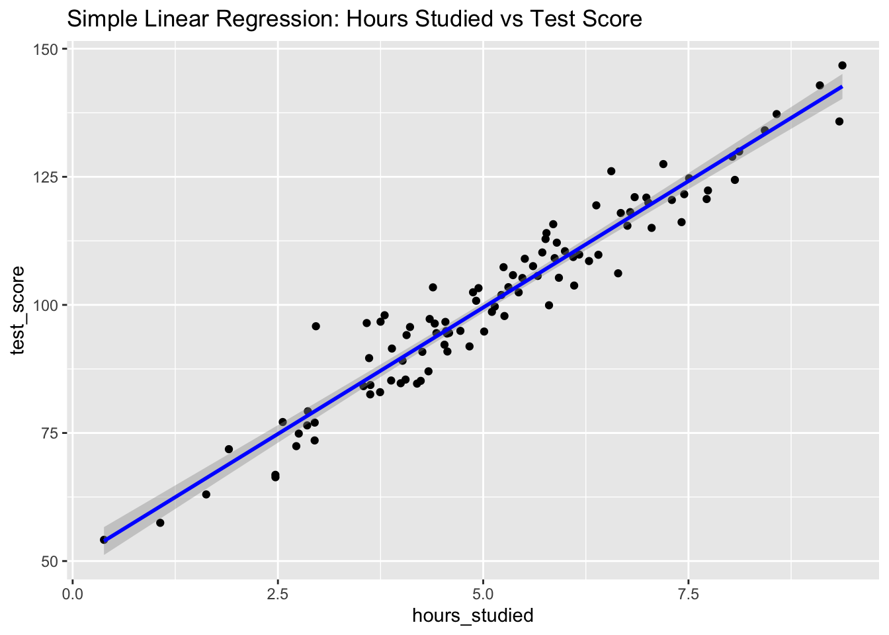

We’ll simulate data to demonstrate the relationship between independent and dependent variables.
1.1 Example: Hours of Study and Test Scores
# Simulate dataset.seed(123)hours_of_study <-c(1, 2, 3, 4, 5, 6, 7, 8, 9, 10) # Independent Variabletest_scores <-50+5* hours_of_study +rnorm(10, mean =0, sd =5) # Dependent Variable# Combine into a data framedata <-data.frame(Hours = hours_of_study, Scores = test_scores)# Visualize the relationshiplibrary(ggplot2)ggplot(data, aes(x = Hours, y = Scores)) +geom_point(color ="blue", size =3) +geom_smooth(method ="lm", se =FALSE, color ="red") +labs(title ="Effect of Hours of Study on Test Scores",x ="Hours of Study (Independent Variable)",y ="Test Scores (Dependent Variable)" ) +theme_minimal()
`geom_smooth()` using formula = 'y ~ x'
Interpretation of the Graph
X-axis (Independent Variable): Hours of study.
Y-axis (Dependent Variable): Test scores.
As hours of study increase, test scores generally increase, showing a positive relationship.
1.2 Inverse Relationship Example
An inverse relationship occurs when one variable increases while the other decreases. For instance, the more time spent on social media, the lower the grades a student might achieve.
# Simulate dataset.seed(42)social_media_hours <-seq(1, 10, by =1) # Independent Variablegrades <-100-5* social_media_hours +rnorm(10, mean =0, sd =2) # Dependent Variable# Combine into a data frameinverse_data <-data.frame(SocialMediaHours = social_media_hours, Grades = grades)# Visualize the inverse relationshiplibrary(ggplot2)ggplot(inverse_data, aes(x = SocialMediaHours, y = Grades)) +geom_point(color ="red", size =3) +geom_smooth(method ="lm", se =FALSE, color ="blue") +labs(title ="Inverse Relationship: Social Media Hours vs. Grades",x ="Social Media Hours (Independent Variable)",y ="Grades (Dependent Variable)" ) +theme_minimal()
`geom_smooth()` using formula = 'y ~ x'
1.3 No-Relation Example
A no-relation scenario means that changes in one variable do not systematically affect the other. For instance, the number of books read by a person and their shoe size typically have no relationship.
# Simulate dataset.seed(123)books_read <-seq(1, 10, by =1) # Independent Variableshoe_size <-rnorm(10, mean =9, sd =1) # Random data with no relation to books_read# Combine into a data frameno_relation_data <-data.frame(BooksRead = books_read, ShoeSize = shoe_size)# Visualize the no-relation scenarioggplot(no_relation_data, aes(x = BooksRead, y = ShoeSize)) +geom_point(color ="green", size =3) +labs(title ="No Relationship: Books Read vs. Shoe Size",x ="Books Read (Independent Variable)",y ="Shoe Size (Dependent Variable)" ) +theme_minimal()
2 NHST
2.1 One-Sample t-Test
Scenario: A teacher claims that the average test score in a class is 70. You want to test if the actual average is different from 70.
\(H_0\): The mean test score is 70 (\(\mu\) = 70).
\(H_a\): The mean test score is not 70 (\(\mu \neq\) 70).
# Simulated data: Test scores of studentsset.seed(123)test_scores <-rnorm(30, mean =72, sd =5)# Perform a one-sample t-testt_test_result <-t.test(test_scores, mu =70)# Print the resultprint(t_test_result)
One Sample t-test
data: test_scores
t = 1.9703, df = 29, p-value = 0.05842
alternative hypothesis: true mean is not equal to 70
95 percent confidence interval:
69.93287 73.59610
sample estimates:
mean of x
71.76448
Interpretation:
If the p-value is less than 0.05, reject \(H_0\). This means the average test score is significantly different from 70.
2.2 Two-Sample t-Test
Scenario: Compare the average test scores of two groups: one that received tutoring and one that did not.
\(H_0\): The mean test scores the two groups are equal (\(\mu_1 = \mu_2\)).
\(H_a\): The mean test scores of the two groups are not equal (\(\mu_1 \neq \mu_2\)).
# Simulated dataset.seed(456)group_A <-rnorm(30, mean =75, sd =5) # Tutored groupgroup_B <-rnorm(30, mean =70, sd =5) # Non-tutored group# Perform a two-sample t-testtwo_sample_test <-t.test(group_A, group_B, alternative ="two.sided")# Print the resultprint(two_sample_test)
Welch Two Sample t-test
data: group_A and group_B
t = 4.1181, df = 53.018, p-value = 0.0001344
alternative hypothesis: true difference in means is not equal to 0
95 percent confidence interval:
2.758615 7.997380
sample estimates:
mean of x mean of y
76.15872 70.78072
Interpretation:
If the p-value is less than 0.05, reject \(H_0\). This indicates a significant difference between the two groups.
2.3 Chi-Square Test
Scenario: Test if there is an association between gender and preference for two types of beverages.
\(H_0\): Gender and beverage preference are independent.
\(H-a\): Gender and beverage preference are not independent.
One variable increases while the other decreases in a perfect ratio.
Example: Number of hours spent studying and hours spent on leisure.
# Simulated datastudy_hours <-seq(1, 10, length.out =50)leisure_hours <-20- study_hours# Calculate correlationcorrelation_perfect_negative <-cor(study_hours, leisure_hours)# Visualizationggplot(data.frame(study_hours, leisure_hours), aes(x = study_hours, y = leisure_hours)) +geom_point(color ="blue") +geom_smooth(method ="lm", color ="red", se =FALSE) +ggtitle(paste("Perfect Negative Correlation: r =", round(correlation_perfect_negative, 2))) +theme_minimal()
`geom_smooth()` using formula = 'y ~ x'
4 Regression
4.1 Simple Linear Regression
Scenario: Predict a student’s test score based on the number of hours studied.
# Simulated dataset.seed(123)hours_studied <-rnorm(100, mean =5, sd =2)test_score <-50+10* hours_studied +rnorm(100, mean =0, sd =5)# Data preparationdata_simple <-data.frame(hours_studied, test_score)# Fit Simple Linear Regressionmodel_simple <-lm(test_score ~ hours_studied, data = data_simple)# Summary of the modelsummary(model_simple)
Call:
lm(formula = test_score ~ hours_studied, data = data_simple)
Residuals:
Min 1Q Median 3Q Max
-9.5367 -3.4175 -0.4375 2.9032 16.4520
Coefficients:
Estimate Std. Error t value Pr(>|t|)
(Intercept) 50.1419 1.4669 34.18 <2e-16 ***
hours_studied 9.8688 0.2672 36.94 <2e-16 ***
---
Signif. codes: 0 '***' 0.001 '**' 0.01 '*' 0.05 '.' 0.1 ' ' 1
Residual standard error: 4.854 on 98 degrees of freedom
Multiple R-squared: 0.933, Adjusted R-squared: 0.9323
F-statistic: 1364 on 1 and 98 DF, p-value: < 2.2e-16
# Visualizationlibrary(ggplot2)ggplot(data_simple, aes(x = hours_studied, y = test_score)) +geom_point() +geom_smooth(method ="lm", color ="blue") +ggtitle("Simple Linear Regression: Hours Studied vs Test Score")
`geom_smooth()` using formula = 'y ~ x'

Intercept: The average test score when hours studied = 0.
Coefficient (hours_studied): For each additional hour studied, test score increases by approximately the coefficient value.
R-squared: Indicates how much of the variability in test scores is explained by hours studied. A value close to 1 suggests a strong relationship.
P-value: If significant (typically p < 0.05), hours studied significantly predicts test scores.
Interpretation:
Students who study more hours tend to achieve higher test scores. The model can explain a substantial portion of the variation in scores through study time.
4.2 Multiple Linear Regression
Scenario: Predict house price based on square footage and number of bedrooms.
# Simulated dataset.seed(456)square_footage <-rnorm(100, mean =1500, sd =300)bedrooms <-sample(2:5, 100, replace =TRUE)house_price <-50000+100* square_footage +10000* bedrooms +rnorm(100, mean =0, sd =20000)# Data preparationdata_multiple <-data.frame(square_footage, bedrooms, house_price)# Fit Multiple Linear Regressionmodel_multiple <-lm(house_price ~ square_footage + bedrooms, data = data_multiple)# Summary of the modelsummary(model_multiple)
Call:
lm(formula = house_price ~ square_footage + bedrooms, data = data_multiple)
Residuals:
Min 1Q Median 3Q Max
-41628 -14765 1413 14674 43071
Coefficients:
Estimate Std. Error t value Pr(>|t|)
(Intercept) 61626.704 11546.090 5.337 6.19e-07 ***
square_footage 89.182 6.481 13.760 < 2e-16 ***
bedrooms 11610.356 1754.323 6.618 2.01e-09 ***
---
Signif. codes: 0 '***' 0.001 '**' 0.01 '*' 0.05 '.' 0.1 ' ' 1
Residual standard error: 19360 on 97 degrees of freedom
Multiple R-squared: 0.7134, Adjusted R-squared: 0.7075
F-statistic: 120.7 on 2 and 97 DF, p-value: < 2.2e-16
# Visualizationggplot(data_multiple, aes(x = square_footage, y = house_price, color =as.factor(bedrooms))) +geom_point() +geom_smooth(method ="lm", aes(group = bedrooms), se =FALSE) +ggtitle("Multiple Linear Regression: House Price vs Square Footage & Bedrooms")
`geom_smooth()` using formula = 'y ~ x'
Intercept: Baseline house price when square footage and bedrooms are 0.
Coefficients: Each unit increase in square footage or additional bedroom increases house price by the respective coefficient.
R-squared: Shows the proportion of variance in house price explained by square footage and bedrooms.
Interpretation:
Larger homes (in square footage) and more bedrooms are associated with higher house prices. Both variables are significant predictors, but additional bedrooms might have a stronger influence.
4.3 Time Series Regression
Scenario: Predict sales based on time trends and promotions.
# Simulated dataset.seed(303)time <-1:100promotions <-sample(0:1, 100, replace =TRUE)sales <-50+2* time +10* promotions +rnorm(100, mean =0, sd =5)# Data preparationdata_time <-data.frame(time, promotions, sales)# Fit Time Series Regressionmodel_time <-lm(sales ~ time + promotions, data = data_time)# Summary of the modelsummary(model_time)
Call:
lm(formula = sales ~ time + promotions, data = data_time)
Residuals:
Min 1Q Median 3Q Max
-13.7319 -3.2999 0.0154 3.7220 12.5617
Coefficients:
Estimate Std. Error t value Pr(>|t|)
(Intercept) 50.05265 1.11623 44.841 < 2e-16 ***
time 2.00671 0.01785 112.450 < 2e-16 ***
promotions 9.47772 1.04050 9.109 1.13e-14 ***
---
Signif. codes: 0 '***' 0.001 '**' 0.01 '*' 0.05 '.' 0.1 ' ' 1
Residual standard error: 5.147 on 97 degrees of freedom
Multiple R-squared: 0.9925, Adjusted R-squared: 0.9923
F-statistic: 6413 on 2 and 97 DF, p-value: < 2.2e-16
# Visualizationggplot(data_time, aes(x = time, y = sales)) +geom_point() +geom_line(aes(y =predict(model_time)), color ="blue") +facet_wrap(~promotions, scales ="free", ncol =1) +ggtitle("Time Series Regression: Sales Over Time")
Time Coefficient: Represents the trend over time.
Promotions Coefficient: Indicates the additional impact of running a promotion on sales.
R-squared: Measures how well time and promotions explain sales variability.
Interpretation:
Sales increase over time, possibly due to market growth or product popularity. Promotions have a significant positive impact on sales, validating their effectiveness.